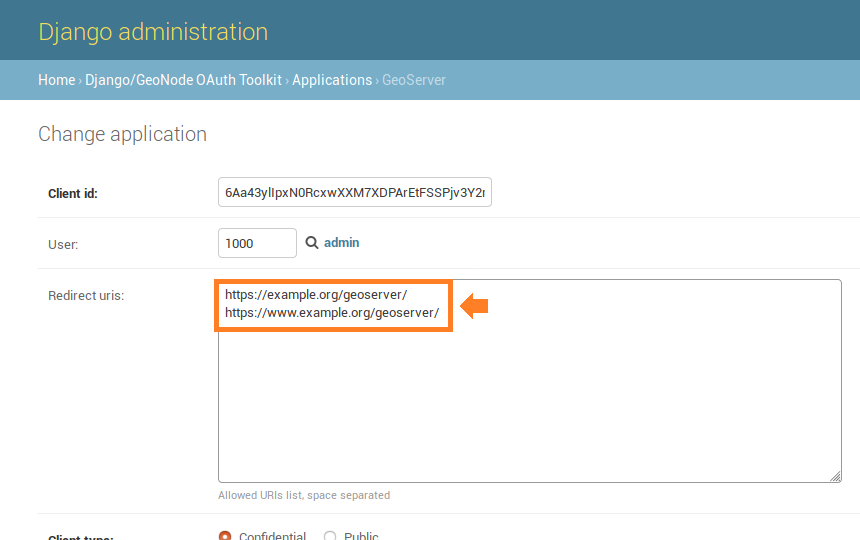
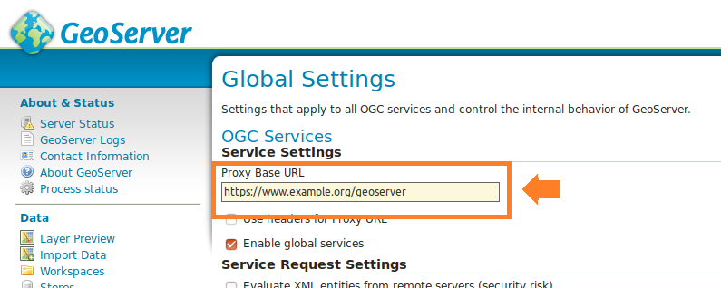
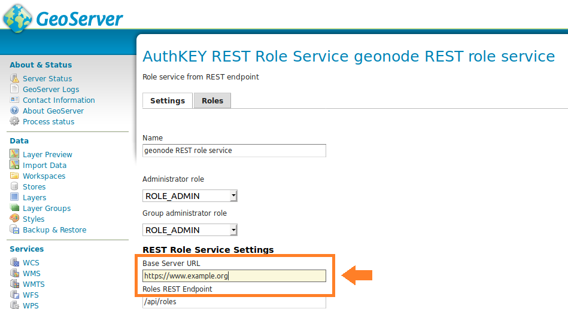
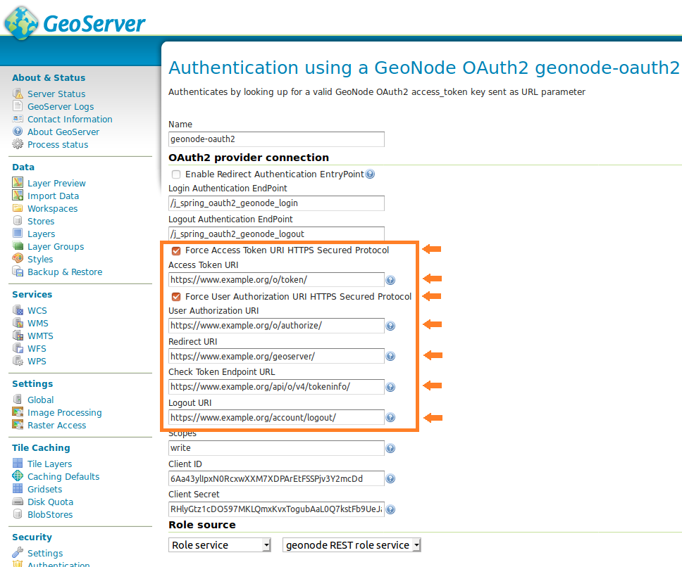

Vanilla GeoNode bare installation¶
1. Basic GeoNode installation¶
This is the most basic installation of GeoNode. It won’t use any external server like Apache Tomcat, PostgreSQL or HTTPD for the moment.
First of all we need to prepare a new Python Virtual Environment.
Create a Python Virtual Environent¶
Since geonode needs a large number of different python libraries and packages, its recommended to use a python virtual environment to avoid conflicts on dependencies with system wide python packages and other installed software.
Note
The GeoNode Virtual Environment must be created only the first time. You won’t need to create it again everytime.
mkdir -p ~/.virtualenvs
python3 -m venv ~/.virtualenvs/geonode
source ~/.virtualenvs/geonode/bin/activate
At this point your command prompt shows a (geonode) prefix, this indicates that your virtualenv is active.
Note
The next time you need to access the Virtual Environment just run
source ~/.virtualenvs/geonode/bin/activate
Clone and Set Up GeoNode core¶
# Let's create the GeoNode core base folder and clone it
sudo mkdir -p /opt/geonode/; sudo usermod -a -G www-data $USER; sudo chown -Rf $USER:www-data /opt/geonode/; sudo chmod -Rf 775 /opt/geonode/
# Clone the GeoNode source code (using the branch 5.0.x) on /opt/geonode
cd /opt; git clone https://github.com/GeoNode/geonode.git -b 5.0.x geonode
# Install the Python packages
cd /opt/geonode
pip install -r requirements.txt --upgrade
pip install -e . --upgrade
Edit /opt/geonode/celery-cmd.
CELERY__STATE_DB=${CELERY__STATE_DB:-"/opt/geonode/worker@%h.state"}
Edit /opt/geonode/geonode/settings.py.
FILE_UPLOAD_DIRECTORY_PERMISSIONS = 0o777
FILE_UPLOAD_PERMISSIONS = 0o777
Edit /opt/geonode/uwsgi.ini.
chdir = /opt/geonode/
touch-reload = /opt/geonode/geonode/wsgi.py
2. PostGIS database setup¶
Be sure you have successfully completed all the steps of the section Install the dependencies.
In this section, we are going to setup users and databases for GeoNode in PostgreSQL.
Install and Configure the PostgreSQL Database System¶
In this section we are going to install the PostgreSQL packages along with the PostGIS extension. Those steps must be done only if you don’t have the DB already installed on your system.
# Ubuntu 24.04 (focal)
sudo sh -c 'echo "deb http://apt.postgresql.org/pub/repos/apt/ `lsb_release -cs`-pgdg main" > /etc/apt/sources.list.d/pgdg.list'
wget -qO- https://www.postgresql.org/media/keys/ACCC4CF8.asc | gpg --dearmor | sudo tee /etc/apt/trusted.gpg.d/pgdg.gpg >/dev/null
# Install PostgreSQL and PostGIS
sudo apt update
sudo apt install -y \
postgresql-15 \
postgresql-client-15 \
postgresql-15-postgis-3 \
postgresql-15-postgis-3-scripts
We now must create two databases, geonode and geonode_data, belonging to the role geonode.
Warning
This is our default configuration. You can use any database or role you need. The connection parameters must be correctly configured on settings, as we will see later in this section.
Databases and Permissions¶
First, create the geonode user. GeoNode is going to use this user to access the database
sudo service postgresql start
sudo -u postgres createuser -P geonode
# Use the password: geonode
You will be prompted asked to set a password for the user. Enter geonode as password.
Warning
This is a sample password used for the sake of simplicity. This password is very weak and should be changed in a production environment.
Create database geonode and geonode_data with owner geonode
sudo -u postgres createdb -O geonode geonode
sudo -u postgres createdb -O geonode geonode_data
Next let's create PostGIS extensions
sudo -u postgres psql -d geonode -c 'CREATE EXTENSION postgis;'
sudo -u postgres psql -d geonode -c 'GRANT ALL ON geometry_columns TO PUBLIC;'
sudo -u postgres psql -d geonode -c 'GRANT ALL ON spatial_ref_sys TO PUBLIC;'
sudo -u postgres psql -d geonode -c 'GRANT ALL PRIVILEGES ON ALL TABLES IN SCHEMA public TO geonode;'
sudo -u postgres psql -d geonode -c 'GRANT ALL PRIVILEGES ON ALL SEQUENCES IN SCHEMA public TO geonode;'
sudo -u postgres psql -d geonode_data -c 'CREATE EXTENSION postgis;'
sudo -u postgres psql -d geonode_data -c 'GRANT ALL ON geometry_columns TO PUBLIC;'
sudo -u postgres psql -d geonode_data -c 'GRANT ALL ON spatial_ref_sys TO PUBLIC;'
sudo -u postgres psql -d geonode_data -c 'GRANT ALL PRIVILEGES ON ALL TABLES IN SCHEMA public TO geonode;'
sudo -u postgres psql -d geonode_data -c 'GRANT ALL PRIVILEGES ON ALL SEQUENCES IN SCHEMA public TO geonode;'
Final step is to change user access policies for local connections in the file pg_hba.conf
sudo vim /etc/postgresql/15/main/pg_hba.conf
Scroll down to the bottom of the document. We want to make local connection trusted for the default user.
Make sure your configuration looks like the one below.
...
# DO NOT DISABLE!
# If you change this first entry you will need to make sure that the
# database superuser can access the database using some other method.
# Noninteractive access to all databases is required during automatic
# maintenance (custom daily cronjobs, replication, and similar tasks).
#
# Database administrative login by Unix domain socket
local all postgres trust
# TYPE DATABASE USER ADDRESS METHOD
# "local" is for Unix domain socket connections only
local all all md5
# IPv4 local connections:
host all all 127.0.0.1/32 md5
# IPv6 local connections:
host all all ::1/128 md5
# Allow replication connections from localhost, by a user with the
# replication privilege.
local replication all peer
host replication all 127.0.0.1/32 md5
host replication all ::1/128 md5
Warning
If your PostgreSQL database resides on a separate/remote machine, you'll have to allow remote access to the databases in the /etc/postgresql/13/main/pg_hba.conf to the geonode user and tell PostgreSQL to accept non-local connections in your /etc/postgresql/13/main/postgresql.conf file
Restart PostgreSQL to make the change effective.
sudo service postgresql restart
PostgreSQL is now ready. To test the configuration, try to connect to the geonode database as geonode role.
psql -U postgres geonode
# This should not ask for any password
psql -U geonode geonode
# This should ask for the password geonode
# Repeat the test with geonode_data DB
psql -U postgres geonode_data
psql -U geonode geonode_data
Database migrations and data initialization¶
After the creation of the databases, you need to apply database migrations:
cd /opt/geonode_projects/my_project
# Run migrations for the my_geonode database
python manage.py migrate
# Run migrations for the my_geonode_data database
python manage.py migrate --database=datastore
And then initialize the data
python manage.py loaddata /opt/geonode/geonode/people/fixtures/sample_admin.json
python manage.py loaddata /opt/geonode/geonode/base/fixtures/default_oauth_apps.json
python manage.py loaddata /opt/geonode/geonode/base/fixtures/initial_data.json
3. Install GeoServer¶
In this section, we are going to install the Apache Tomcat 9 Servlet Java container, which will be started by default on the internal port 8080.
We will also perform several optimizations to:
- Correctly setup the Java VM Options, like the available heap memory and the garbage collector options.
- Externalize the
GeoServerandGeoWebcachecatalogs in order to allow further updates without the risk of deleting our datasets.
Note
This is still a basic setup of those components. More details will be provided on sections of the documentation concerning the hardening of the system in a production environment. Nevertheless, you will need to tweak a bit those settings accordingly with your current system. As an instance, if your machine does not have enough memory, you will need to lower down the initial amount of available heap memory. Warnings and notes will be placed below the statements that will require your attention.
Install Apache Tomcat¶
The reference version of Tomcat for the Geoserver for GeoNode is Tomcat 9.
Warning
Apache Tomcat 9 and Geoserver require Java 11 or newer to be installed on the server. Check the steps before in order to be sure you have OpenJDK 11 correctly installed on your system.
First, it is not recommended to run Apache Tomcat as user root, so we will create a new system user which will run the Apache Tomcat server
sudo useradd -m -U -d /opt/tomcat -s /bin/bash tomcat
sudo usermod -a -G www-data tomcat
Warning
Now, go to the official Apache Tomcat website <https://tomcat.apache.org/>_ and download the most recent version of the software to your server. But don't use Tomcat10 because there are still some errors between Geoserver and Tomcat.
VERSION=9.0.106; wget https://archive.apache.org/dist/tomcat/tomcat-9/v${VERSION}/bin/apache-tomcat-${VERSION}.tar.gz
Once the download is complete, extract the tar file to the /opt/tomcat directory:
sudo mkdir /opt/tomcat
sudo tar -xf apache-tomcat-${VERSION}.tar.gz -C /opt/tomcat/; rm apache-tomcat-${VERSION}.tar.gz
Apache Tomcat is updated regulary. So, to have more control over versions and updates, we’ll create a symbolic link as below:
sudo ln -s /opt/tomcat/apache-tomcat-${VERSION} /opt/tomcat/latest
Now, let’s change the ownership of all Apache Tomcat files as below:
sudo chown -R tomcat:www-data /opt/tomcat/
Make the shell scripts inside the bin directory executable:
sudo sh -c 'chmod +x /opt/tomcat/latest/bin/*.sh'
Create the a systemd file with the following content:
# Check the correct JAVA_HOME location
JAVA_HOME=$(readlink -f /usr/bin/java | sed "s:bin/java::")
echo $JAVA_HOME
$> /usr/lib/jvm/java-11-openjdk-amd64/
# Let's create a symbolic link to the JDK
sudo ln -s /usr/lib/jvm/java-1.11.0-openjdk-amd64 /usr/lib/jvm/jre
# Let's create the tomcat service
sudo vim /etc/systemd/system/tomcat9.service
[Unit]
Description=Tomcat 9 servlet container
After=network.target
[Service]
Type=forking
User=tomcat
Group=tomcat
Environment="JAVA_HOME=/usr/lib/jvm/jre"
Environment="JAVA_OPTS=-Djava.security.egd=file:///dev/urandom -Djava.awt.headless=true"
Environment="CATALINA_BASE=/opt/tomcat/latest"
Environment="CATALINA_HOME=/opt/tomcat/latest"
Environment="CATALINA_PID=/opt/tomcat/latest/temp/tomcat.pid"
Environment="CATALINA_OPTS=-Xms512M -Xmx1024M -server -XX:+UseParallelGC"
ExecStart=/opt/tomcat/latest/bin/startup.sh
ExecStop=/opt/tomcat/latest/bin/shutdown.sh
[Install]
WantedBy=multi-user.target
Now you can start the Apache Tomcat 9 server and enable it to start on boot time using the following command:
sudo systemctl daemon-reload
sudo systemctl start tomcat9.service
sudo systemctl status tomcat9.service
sudo systemctl enable tomcat9.service
For verification, type the following ss command, which will show you the 8080 open port number, the default open port reserved for Apache Tomcat Server.
ss -ltn
In a clean Ubuntu 24.04, the ss command may not be found and the iproute2 library should be installed first.
sudo apt install iproute2
# Then run the ss command
ss -ltn
If your server is protected by a firewall and you want to access Tomcat from the outside of your local network, you need to open port 8080.
Use the following command to open the necessary port:
sudo ufw allow 8080/tcp
Warning
Generally, when running Tomcat in a production environment, you should use a load balancer or reverse proxy.
It’s a best practice to allow access to port 8080 only from your internal network. We will use NGINX in order to provide Apache Tomcat through the standard HTTP port.
Note
Alternatively you can define the Tomcat Service as follow, in case you would like to use systemctl
sudo vim /usr/lib/systemd/system/tomcat9.service
[Unit]
Description=Apache Tomcat Server
After=syslog.target network.target
[Service]
Type=forking
User=tomcat
Group=tomcat
Environment=JAVA_HOME=/usr/lib/jvm/jre
Environment=JAVA_OPTS=-Djava.security.egd=file:///dev/urandom
Environment=CATALINA_PID=/opt/tomcat/latest/temp/tomcat.pid
Environment=CATALINA_HOME=/opt/tomcat/latest
Environment=CATALINA_BASE=/opt/tomcat/latest
ExecStart=/opt/tomcat/latest/bin/startup.sh
ExecStop=/opt/tomcat/latest/bin/shutdown.sh
RestartSec=30
Restart=always
[Install]
WantedBy=multi-user.target
sudo systemctl daemon-reload
sudo systemctl enable tomcat9.service
sudo systemctl start tomcat9.service
Install GeoServer on Tomcat¶
Let's externalize the GEOSERVER_DATA_DIR and logs
# Create the target folders
sudo mkdir -p /opt/data
sudo chown -Rf $USER:www-data /opt/data
sudo chmod -Rf 775 /opt/data
sudo mkdir -p /opt/data/logs
sudo chown -Rf $USER:www-data /opt/data/logs
sudo chmod -Rf 775 /opt/data/logs
# Download and extract the default GEOSERVER_DATA_DIR
GS_VERSION=2.24.2
sudo wget "https://artifacts.geonode.org/geoserver/$GS_VERSION/geonode-geoserver-ext-web-app-data.zip" -O data-$GS_VERSION.zip
sudo unzip data-$GS_VERSION.zip -d /opt/data/
sudo mv /opt/data/data/ /opt/data/geoserver_data
sudo chown -Rf tomcat:www-data /opt/data/geoserver_data
sudo chmod -Rf 775 /opt/data/geoserver_data
sudo mkdir -p /opt/data/geoserver_logs
sudo chown -Rf tomcat:www-data /opt/data/geoserver_logs
sudo chmod -Rf 775 /opt/data/geoserver_logs
sudo mkdir -p /opt/data/gwc_cache_dir
sudo chown -Rf tomcat:www-data /opt/data/gwc_cache_dir
sudo chmod -Rf 775 /opt/data/gwc_cache_dir
# Download and install GeoServer
sudo wget "https://artifacts.geonode.org/geoserver/$GS_VERSION/geoserver.war" -O geoserver-$GS_VERSION.war
sudo mv geoserver-$GS_VERSION.war /opt/tomcat/latest/webapps/geoserver.war
Let's now configure the JAVA_OPTS, i.e. the parameters to run the Servlet Container, like heap memory, garbage collector and so on.
sudo sed -i -e 's/xom-\*\.jar/xom-\*\.jar,bcprov\*\.jar/g' /opt/tomcat/latest/conf/catalina.properties
export JAVA_HOME=$(readlink -f /usr/bin/java | sed "s:bin/java::")
echo 'JAVA_HOME='$JAVA_HOME | sudo tee --append /opt/tomcat/latest/bin/setenv.sh
sudo sed -i -e "s/JAVA_OPTS=/#JAVA_OPTS=/g" /opt/tomcat/latest/bin/setenv.sh
echo 'GEOSERVER_DATA_DIR="/opt/data/geoserver_data"' | sudo tee --append /opt/tomcat/latest/bin/setenv.sh
echo 'GEOSERVER_LOG_LOCATION="/opt/data/geoserver_logs/geoserver.log"' | sudo tee --append /opt/tomcat/latest/bin/setenv.sh
echo 'GEOWEBCACHE_CACHE_DIR="/opt/data/gwc_cache_dir"' | sudo tee --append /opt/tomcat/latest/bin/setenv.sh
echo 'GEOFENCE_DIR="$GEOSERVER_DATA_DIR/geofence"' | sudo tee --append /opt/tomcat/latest/bin/setenv.sh
echo 'TIMEZONE="UTC"' | sudo tee --append /opt/tomcat/latest/bin/setenv.sh
echo 'JAVA_OPTS="-server -Djava.awt.headless=true -Dorg.geotools.shapefile.datetime=false -DGS-SHAPEFILE-CHARSET=UTF-8 -XX:+UseParallelGC -XX:ParallelGCThreads=4 -Dfile.encoding=UTF8 -Duser.timezone=$TIMEZONE -Xms512m -Xmx4096m -Djavax.servlet.request.encoding=UTF-8 -Djavax.servlet.response.encoding=UTF-8 -DGEOSERVER_CSRF_DISABLED=true -DPRINT_BASE_URL=http://localhost:8080/geoserver/pdf -DGEOSERVER_DATA_DIR=$GEOSERVER_DATA_DIR -Dgeofence.dir=$GEOFENCE_DIR -DGEOSERVER_LOG_LOCATION=$GEOSERVER_LOG_LOCATION -DGEOWEBCACHE_CACHE_DIR=$GEOWEBCACHE_CACHE_DIR -Dgwc.context.suffix=gwc"' | sudo tee --append /opt/tomcat/latest/bin/setenv.sh
Note
After the execution of the above statements, you should be able to see the new options written at the bottom of the file /opt/tomcat/latest/bin/setenv.sh.
# If you run Tomcat on port numbers that are all higher than 1023, then you
# do not need authbind. It is used for binding Tomcat to lower port numbers.
# (yes/no, default: no)
#AUTHBIND=no
JAVA_HOME=/usr/lib/jvm/java-11-openjdk-amd64/
GEOSERVER_DATA_DIR="/opt/data/geoserver_data"
GEOSERVER_LOG_LOCATION="/opt/data/geoserver_logs/geoserver.log"
GEOWEBCACHE_CACHE_DIR="/opt/data/gwc_cache_dir"
GEOFENCE_DIR="$GEOSERVER_DATA_DIR/geofence"
TIMEZONE="UTC"
JAVA_OPTS="-server -Djava.awt.headless=true -Dorg.geotools.shapefile.datetime=false -DGS-SHAPEFILE-CHARSET=UTF-8 -XX:+UseParallelGC -XX:ParallelGCThreads=4 -Dfile.encoding=UTF8 -Duser.timezone=$TIMEZONE -Xms512m -Xmx4096m -Djavax.servlet.request.encoding=UTF-8 -Djavax.servlet.response.encoding=UTF-8 -DGEOSERVER_CSRF_DISABLED=true -DPRINT_BASE_URL=http://localhost:8080/geoserver/pdf -DGEOSERVER_DATA_DIR=$GEOSERVER_DATA_DIR -Dgeofence.dir=$GEOFENCE_DIR -DGEOSERVER_LOG_LOCATION=$GEOSERVER_LOG_LOCATION -DGEOWEBCACHE_CACHE_DIR=$GEOWEBCACHE_CACHE_DIR"
Those options could be updated or changed manually at any time, accordingly to your needs.
Warning
The default options we are going to add to the Servlet Container, assume you can reserve at least 4GB of RAM to GeoServer (see the option -Xmx4096m). You must be sure your machine has enough memory to run both GeoServer and GeoNode, which in this case means at least 4GB for GeoServer plus at least 2GB for GeoNode. A total of at least 6GB of RAM available on your machine. If you don't have enough RAM available, you can lower down the values -Xms512m -Xmx4096m. Consider that with less RAM available, the performances of your services will be highly impacted.
# Create the Logrotate config
sudo tee /etc/logrotate.d/geoserver <<EOF
/opt/data/geoserver_logs/geoserver.log
/opt/tomcat/apache-tomcat-*/logs/*.log
/opt/tomcat/apache-tomcat-*/logs/*.out
/opt/tomcat/apache-tomcat-*/logs/*.txt
{
copytruncate
daily
rotate 5
delaycompress
missingok
su tomcat tomcat
}
EOF
Conifgure the Geofence DB¶
Before starting the service, Geofence must be configured to connect to the PostgreSQL DB, where its rules will be stored.
Warning
In previous versions this step was optional and a file-based H2 DB could be used. This option has been dropped since using H2 is highly discouraged.
Open the geofence-datasource-ovr.properties file for edit:
sudo vim /opt/data/geoserver_data/geofence/geofence-datasource-ovr.properties
And paste the following code by replace the placehoders with the required files
ggeofenceVendorAdapter.databasePlatform=org.hibernate.spatial.dialect.postgis.PostgisDialect
geofenceDataSource.driverClassName=org.postgresql.Driver
geofenceDataSource.url=jdbc:postgresql://localhost:5432/geonode_data
geofenceDataSource.username=geonode
geofenceDataSource.password=geonode
geofenceEntityManagerFactory.jpaPropertyMap[hibernate.default_schema]=public
geofenceDataSource.testOnBorrow=true
geofenceDataSource.validationQuery=SELECT 1
geofenceEntityManagerFactory.jpaPropertyMap[hibernate.testOnBorrow]=true
geofenceEntityManagerFactory.jpaPropertyMap[hibernate.validationQuery]=SELECT 1
geofenceDataSource.removeAbandoned=true
geofenceDataSource.removeAbandonedTimeout=60
geofenceDataSource.connectionProperties=ApplicationName=GeoFence;
In order to make the changes effective, you'll need to restart the Servlet Container.
# Restart the server
sudo systemctl restart tomcat9.service
# Follow the startup logs
sudo tail -F -n 300 /opt/data/geoserver_logs/geoserver.log
If you can see on the logs something similar to this, without errors:
...
2019-05-31 10:06:34,190 INFO [geoserver.wps] - Found 5 bindable processes in GeoServer specific processes
2019-05-31 10:06:34,281 INFO [geoserver.wps] - Found 89 bindable processes in Deprecated processes
2019-05-31 10:06:34,298 INFO [geoserver.wps] - Found 31 bindable processes in Vector processes
2019-05-31 10:06:34,307 INFO [geoserver.wps] - Found 48 bindable processes in Geometry processes
2019-05-31 10:06:34,307 INFO [geoserver.wps] - Found 1 bindable processes in PolygonLabelProcess
2019-05-31 10:06:34,311 INFO [geoserver.wps] - Blacklisting process ras:ConvolveCoverage as the input kernel of type class javax.media.jai.KernelJAI cannot be handled
2019-05-31 10:06:34,319 INFO [geoserver.wps] - Blacklisting process ras:RasterZonalStatistics2 as the input zones of type class java.lang.Object cannot be handled
2019-05-31 10:06:34,320 INFO [geoserver.wps] - Blacklisting process ras:RasterZonalStatistics2 as the input nodata of type class it.geosolutions.jaiext.range.Range cannot be handled
2019-05-31 10:06:34,320 INFO [geoserver.wps] - Blacklisting process ras:RasterZonalStatistics2 as the input rangeData of type class java.lang.Object cannot be handled
2019-05-31 10:06:34,320 INFO [geoserver.wps] - Blacklisting process ras:RasterZonalStatistics2 as the output zonal statistics of type interface java.util.List cannot be handled
2019-05-31 10:06:34,321 INFO [geoserver.wps] - Found 18 bindable processes in Raster processes
2019-05-31 10:06:34,917 INFO [ows.OWSHandlerMapping] - Mapped URL path [/TestWfsPost] onto handler 'wfsTestServlet'
2019-05-31 10:06:34,918 INFO [ows.OWSHandlerMapping] - Mapped URL path [/wfs/*] onto handler 'dispatcher'
2019-05-31 10:06:34,918 INFO [ows.OWSHandlerMapping] - Mapped URL path [/wfs] onto handler 'dispatcher'
2019-05-31 10:06:42,237 INFO [geoserver.security] - Start reloading user/groups for service named default
2019-05-31 10:06:42,241 INFO [geoserver.security] - Reloading user/groups successful for service named default
2019-05-31 10:06:42,357 WARN [auth.GeoFenceAuthenticationProvider] - INIT FROM CONFIG
2019-05-31 10:06:42,494 INFO [geoserver.security] - AuthenticationCache Initialized with 1000 Max Entries, 300 seconds idle time, 600 seconds time to live and 3 concurrency level
2019-05-31 10:06:42,495 INFO [geoserver.security] - AuthenticationCache Eviction Task created to run every 600 seconds
2019-05-31 10:06:42,506 INFO [config.GeoserverXMLResourceProvider] - Found configuration file in /opt/data/gwc_cache_dir
2019-05-31 10:06:42,516 INFO [config.GeoserverXMLResourceProvider] - Found configuration file in /opt/data/gwc_cache_dir
2019-05-31 10:06:42,542 INFO [config.XMLConfiguration] - Wrote configuration to /opt/data/gwc_cache_dir
2019-05-31 10:06:42,547 INFO [geoserver.importer] - Enabling import store: memory
Your GeoServer should be up and running at
http://localhost:8080/geoserver/
Warning
In case of errors or the file geoserver.log is not created, check the Catalina logs in order to try to understand what's happened.
sudo less /opt/tomcat/latest/logs/catalina.out
Run GeoNode in development mode¶
Now you have a completely working GeoNode instance installed which can be run by running the development server of Django.
To start GeoNode in development mode run the following:
cd /opt/geonode
python manage.py runserver
If you navigate to http://localhost:8000 you should see the home page of GeoNode.
You can login as administrator by using the credentials below:
username: admin
password: admin
Next sections are focused on setting GeoNode in a production environment.
4. Web Server¶
Until now we have seen how to start GeoNode in DEBUG mode from the command line, through the paver utilities. This is of course not the best way to start it. Moreover you will need a dedicated HTTPD server running on port 80 if you would like to expose your server to the world.
In this section we will see:
- How to configure
NGINXHTTPD Server to hostGeoNodeandGeoServer. In the initial setup we will still run the services onhttp://localhost - Update the
settingsin order to linkGeoNodeandGeoServerto thePostgreSQLDatabase. - Update the
settingsin order to updateGeoNodeandGeoServerservices running on a public IP or hostname. - Install and enable
HTTPSsecured connection through theLet's Encryptprovider.
Install and configure NGINX¶
# Install the services
sudo apt install -y nginx uwsgi uwsgi-plugin-python3
Serving {“geonode”, “geoserver”} via NGINX¶
# Create the UWSGI config
sudo vim /opt/geonode/uwsgi.ini
[uwsgi]
# uwsgi-socket = 0.0.0.0:8000
http-socket = 0.0.0.0:8000
logto = /var/log/geonode.log
# pidfile = /tmp/geonode.pid
chdir = /opt/geonode/
module = geonode.wsgi:application
strict = false
master = true
enable-threads = true
vacuum = true ; Delete sockets during shutdown
single-interpreter = true
die-on-term = true ; Shutdown when receiving SIGTERM (default is respawn)
need-app = true
thunder-lock = true
touch-reload = /opt/geonode/geonode/wsgi.py
buffer-size = 32768
harakiri = 600 ; forcefully kill workers after 600 seconds
py-callos-afterfork = true ; allow workers to trap signals
max-requests = 1000 ; Restart workers after this many requests
max-worker-lifetime = 3600 ; Restart workers after this many seconds
reload-on-rss = 2048 ; Restart workers after this much resident memory
worker-reload-mercy = 60 ; How long to wait before forcefully killing workers
cheaper-algo = busyness
processes = 128 ; Maximum number of workers allowed
cheaper = 8 ; Minimum number of workers allowed
cheaper-initial = 16 ; Workers created at startup
cheaper-overload = 1 ; Length of a cycle in seconds
cheaper-step = 16 ; How many workers to spawn at a time
cheaper-busyness-multiplier = 30 ; How many cycles to wait before killing workers
cheaper-busyness-min = 20 ; Below this threshold, kill workers (if stable for multiplier cycles)
cheaper-busyness-max = 70 ; Above this threshold, spawn new workers
cheaper-busyness-backlog-alert = 16 ; Spawn emergency workers if more than this many requests are waiting in the queue
cheaper-busyness-backlog-step = 2 ; How many emergency workers to create if there are too many requests in the queue
# daemonize = /var/log/uwsgi/geonode.log
# cron = -1 -1 -1 -1 -1 /usr/local/bin/python /usr/src/geonode/manage.py collect_metrics -n
# Create the UWSGI system service
sudo vim /etc/systemd/system/geonode-uwsgi.service
Warning
IMPORTANT
Change the line ExecStart=... below with your current user home directory!
e.g.: If the user is geosolutions then ExecStart=/home/geosolutions/.virtualenvs/geonode/bin/uwsgi --ini /opt/geonode/uwsgi.ini
[Unit]
Description=GeoNode UWSGI Service
After=rc-local.service
[Service]
EnvironmentFile=/opt/geonode/.env
User=geosolutions
Group=geosolutions
PIDFile=/run/geonode-uwsgi.pid
ExecStart=/home/geosolutions/.virtualenvs/geonode/bin/uwsgi --ini /opt/geonode/uwsgi.ini
PrivateTmp=true
Type=simple
Restart=always
KillMode=process
TimeoutSec=900
[Install]
WantedBy=multi-user.target
# Enable the UWSGI service
sudo systemctl daemon-reload
sudo systemctl start geonode-uwsgi.service
sudo systemctl status geonode-uwsgi.service
sudo systemctl enable geonode-uwsgi.service
# Create the Logrotate config
sudo tee /etc/logrotate.d/uwsgi-geonode <<EOF
"/var/log/geonode.log" {
copytruncate
daily
rotate 5
delaycompress
missingok
notifempty
su root root
}
EOF
# Backup the original NGINX config
sudo mv /etc/nginx/nginx.conf /etc/nginx/nginx.conf.orig
# Create the GeoNode Default NGINX config
sudo vim /etc/nginx/nginx.conf
# Make sure your nginx.config matches the following one
user www-data;
worker_processes auto;
pid /run/nginx.pid;
include /etc/nginx/modules-enabled/*.conf;
events {
worker_connections 768;
# multi_accept on;
}
http {
##
# Basic Settings
##
sendfile on;
tcp_nopush on;
tcp_nodelay on;
keepalive_timeout 65;
types_hash_max_size 2048;
# server_tokens off;
# server_names_hash_bucket_size 64;
# server_name_in_redirect off;
include /etc/nginx/mime.types;
default_type application/octet-stream;
##
# SSL Settings
##
ssl_protocols TLSv1 TLSv1.1 TLSv1.2; # Dropping SSLv3, ref: POODLE
ssl_prefer_server_ciphers on;
##
# Logging Settings
##
access_log /var/log/nginx/access.log;
error_log /var/log/nginx/error.log;
##
# Gzip Settings
##
gzip on;
gzip_vary on;
gzip_proxied any;
gzip_http_version 1.1;
gzip_disable "MSIE [1-6]\.";
gzip_buffers 16 8k;
gzip_min_length 1100;
gzip_comp_level 6;
gzip_types video/mp4 text/plain application/javascript application/x-javascript text/javascript text/xml text/css image/jpeg;
##
# Virtual Host Configs
##
include /etc/nginx/conf.d/*.conf;
include /etc/nginx/sites-enabled/*;
}
# Remove the Default NGINX config
sudo rm /etc/nginx/sites-enabled/default
# Create the GeoNode App NGINX config
sudo vim /etc/nginx/sites-available/geonode
uwsgi_intercept_errors on;
upstream geoserver_proxy {
server localhost:8080;
}
# Expires map
map $sent_http_content_type $expires {
default off;
text/html epoch;
text/css max;
application/javascript max;
~image/ max;
}
server {
listen 80 default_server;
listen [::]:80 default_server;
root /var/www/html;
index index.html index.htm index.nginx-debian.html;
server_name _;
charset utf-8;
etag on;
expires $expires;
proxy_read_timeout 600s;
# set client body size to 2M #
client_max_body_size 50000M;
location / {
etag off;
proxy_pass http://127.0.0.1:8000;
include proxy_params;
}
location /static/ {
alias /opt/geonode/geonode/static_root/;
}
location /uploaded/ {
alias /opt/geonode/geonode/uploaded/;
}
location /geoserver {
proxy_pass http://geoserver_proxy;
include proxy_params;
}
}
# Prepare the uploaded folder
sudo mkdir -p /opt/geonode/geonode/uploaded
sudo chown -Rf tomcat:www-data /opt/geonode/geonode/uploaded
sudo chmod -Rf 777 /opt/geonode/geonode/uploaded/
sudo touch /opt/geonode/geonode/.celery_results
sudo chmod 777 /opt/geonode/geonode/.celery_results
# Enable GeoNode NGINX config
sudo ln -s /etc/nginx/sites-available/geonode /etc/nginx/sites-enabled/geonode
# Restart the services
sudo service tomcat9 restart
sudo service nginx restart
Update the settings in order to use the PostgreSQL Database¶
Warning
Make sure you already installed and configured the Database as explained in the previous sections.
Note
Instead of using the local_settings.py, you can drive the GeoNode behavior through the .env* variables; see as an instance the file ./paver_dev.sh or ./manage_dev.sh in order to understand how to use them. In that case you don't need to create the local_settings.py file; you can just stick with the decault one, which will take the values from the ENV. We tend to prefer this method in a production/dockerized system.
workon geonode
cd /opt/geonode
# Initialize GeoNode
chmod +x *.sh
./paver_local.sh reset
./paver_local.sh setup
./paver_local.sh sync
./manage_local.sh collectstatic --noinput
sudo chmod -Rf 777 geonode/static_root/ geonode/uploaded/
Before finalizing the configuration we will need to update the UWSGI settings
Restart UWSGI and update OAuth2 by using the new geonode.settings
# As superuser
sudo su
# Restart Tomcat
service tomcat9 restart
# Restart UWSGI
pkill -9 -f uwsgi
# Update the GeoNode ip or hostname
cd /opt/geonode
# This must be done the first time only
cp package/support/geonode.binary /usr/bin/geonode
cp package/support/geonode.updateip /usr/bin/geonode_updateip
chmod +x /usr/bin/geonode
chmod +x /usr/bin/geonode_updateip
# Refresh GeoNode and GeoServer OAuth2 settings
source .env_local
PYTHONWARNINGS=ignore VIRTUAL_ENV=$VIRTUAL_ENV DJANGO_SETTINGS_MODULE=geonode.settings GEONODE_ETC=/opt/geonode/geonode GEOSERVER_DATA_DIR=/opt/data/geoserver_data TOMCAT_SERVICE="service tomcat9" APACHE_SERVICE="service nginx" geonode_updateip -p localhost
# Go back to standard user
exit
Check for any error with
sudo tail -F -n 300 /var/log/geonode.log
Reload the UWSGI configuration with
touch /opt/geonode/geonode/wsgi.py
5. Update the settings in order to update GeoNode and GeoServer services running on a public IP or hostname¶
Warning
Before exposing your services to the Internet, make sure your system is hardened and secure enough. See the specific documentation section for more details.
Let's say you want to run your services on a public IP or domain, e.g. www.example.org. You will need to slightly update your services in order to reflect the new server name.
In particular the steps to do are:
- Update
NGINXconfiguration in order to serve the new domain name.
sudo vim /etc/nginx/sites-enabled/geonode
# Update the 'server_name' directive
server_name example.org www.example.org;
# Restart the service
sudo service nginx restart
- Update
.envwith the new domain name.
vim /opt/geonode/.env
# Change everywhere 'localhost' to the new hostname
:%s/localhost/www.example.org/g
:wq
# Restart the service
sudo systemctl restart geonode-uwsgi
- Update
OAuth2configuration in order to hit the new hostname.
workon geonode
sudo su
cd /opt/geonode
# Update the GeoNode ip or hostname
PYTHONWARNINGS=ignore VIRTUAL_ENV=$VIRTUAL_ENV DJANGO_SETTINGS_MODULE=geonode.settings GEONODE_ETC=/opt/geonode/geonode GEOSERVER_DATA_DIR=/opt/data/geoserver_data TOMCAT_SERVICE="service tomcat9" APACHE_SERVICE="service nginx" geonode_updateip -l localhost -p www.example.org
exit
- Update the existing
GeoNodelinks in order to hit the new hostname.
workon geonode
# To avoid spatialite conflict if using postgresql
vim $VIRTUAL_ENV/bin/postactivate
# Add these to make available. Change user, password and server information to yours
export DATABASE_URL='postgresql://<postgresqluser>:<postgresqlpass>@localhost:5432/geonode'
# Close virtual environment and aopen it again to update variables
deactivate
workon geonode
cd /opt/geonode
# Update the GeoNode ip or hostname
DJANGO_SETTINGS_MODULE=geonode.settings python manage.py migrate_baseurl --source-address=http://localhost --target-address=http://www.example.org
Note
If at the end you get a "bad gateway" error when accessing your geonode site, check uwsgi log with sudo tail -f /var/log/geonode.log and if theres is an error related with port 5432 check the listening configuration from the postgresql server and allow the incoming traffic from geonode.
6. Install and enable HTTPS secured connection through the Let's Encrypt provider¶
# Install Let's Encrypt Certbot
# sudo add-apt-repository ppa:certbot/certbot # for ubuntu 18.04 and lower
sudo apt update -y; sudo apt install python3-certbot-nginx -y
# Reload NGINX config and make sure the firewall denies access to HTTP
sudo systemctl reload nginx
sudo ufw allow 'Nginx Full'
sudo ufw delete allow 'Nginx HTTP'
# Create and dump the Let's Encrypt Certificates
sudo certbot --nginx -d example.org -d www.example.org
# ...choose the redirect option when asked for
Next, the steps to do are:
1.Update the GeoNode OAuth2 Redirect URIs accordingly.
From the GeoNode Admin Dashboard go to Home › Django/GeoNode OAuth Toolkit › Applications › GeoServer

Redirect URIs2.Update the GeoServer Proxy Base URL accordingly.
From the GeoServer Admin GUI go to About & Status > Global

Proxy Base URL3.Update the GeoServer Role Base URL accordingly.
From the GeoServer Admin GUI go to Security > Users, Groups, Roles > geonode REST role service

Role Base URL4.Update the GeoServer OAuth2 Service Parameters accordingly.
From the GeoServer Admin GUI go to Security > Authentication > Authentication Filters > geonode-oauth2

OAuth2 Service Parameters5.Update the .env file
vim /opt/geonode/.env
# Change everywhere 'http' to 'https'
%s/http/https/g
# Restart the service
sudo systemctl restart geonode-uwsgi
7. Enabling Fully Asynchronous Tasks¶
Redis installation¶
GeoNode 5 uses Redis as a message broker and Celery backend for the asyncronous tasks.
Reference: Redis installation
Add Redis repository (optional, to get latest stable version):
sudo add-apt-repository ppa:redislabs/redis -y
sudo apt update
Install Redis Server
sudo apt install redis -y
Check Redis status
sudo systemctl status redis
Redis should already be running and enabled to start on boot.
Managing Redis¶
You can manage the Redis service like any other system service:
sudo systemctl stop redis
sudo systemctl start redis
sudo systemctl restart redis
Redis also provides a command-line tool redis-cli for administration:
redis-cli
# Ping Redis
ping
# You should see the following response:
PONG
Daemonize and configure Celery¶
Create the Systemd unit
sudo vim /etc/systemd/system/celery.service
[Unit]
Description=Celery
After=network.target
[Service]
Type=simple
# the specific user that our service will run as
EnvironmentFile=/opt/geonode/.env
User=geosolutions
Group=geosolutions
# another option for an even more restricted service is
# DynamicUser=yes
# see http://0pointer.net/blog/dynamic-users-with-systemd.html
RuntimeDirectory=celery
WorkingDirectory=/opt/geonode
ExecStart=bash -c 'source /home/geosolutions/.virtualenvs/geonode/bin/activate && /opt/geonode/celery-cmd'
ExecReload=/bin/kill -s HUP $MAINPID
Restart=always
TimeoutSec=900
TimeoutStopSec=60
PrivateTmp=true
[Install]
WantedBy=multi-user.target
# Create the Logrotate config
sudo tee /etc/logrotate.d/celery <<EOF
"/var/log/celery.log" {
copytruncate
daily
rotate 5
delaycompress
missingok
notifempty
su root root
}
EOF
Manage Celery¶
Restart Celery
# Restart Celery
sudo systemctl restart celery
# Kill old celery workers (if any)
sudo pkill -f celery
Inspect the logs
# Check the celery service status
sudo systemctl status celery
# Check the celery logs
sudo tail -F -n 300 /var/log/celery.log
Troubleshooting¶
Celery might crash during startup with this error:
looking for plugins in '/usr/lib64/sasl2', failed to open directory, error: No such file or directory
The workaround is a symlink at that path.
ln -sfn /usr/lib/x86_64-linux-gnu/sasl2/ /usr/lib64/sasl2
Install Memcached¶
sudo apt install memcached
sudo systemctl start memcached
sudo systemctl enable memcached
sudo systemctl restart celery
sudo systemctl status celery